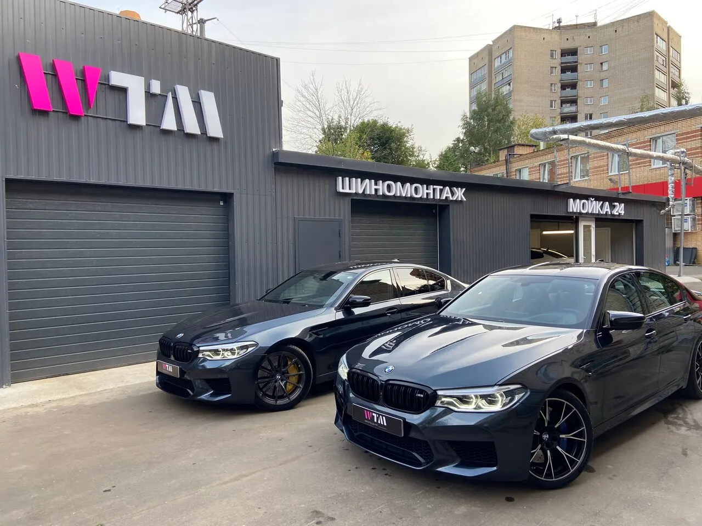
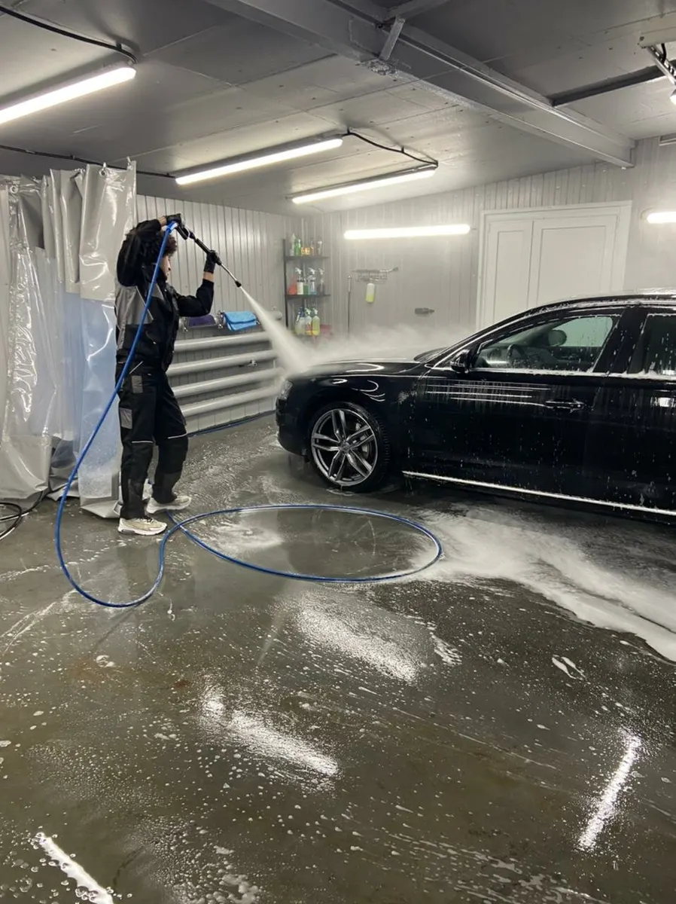
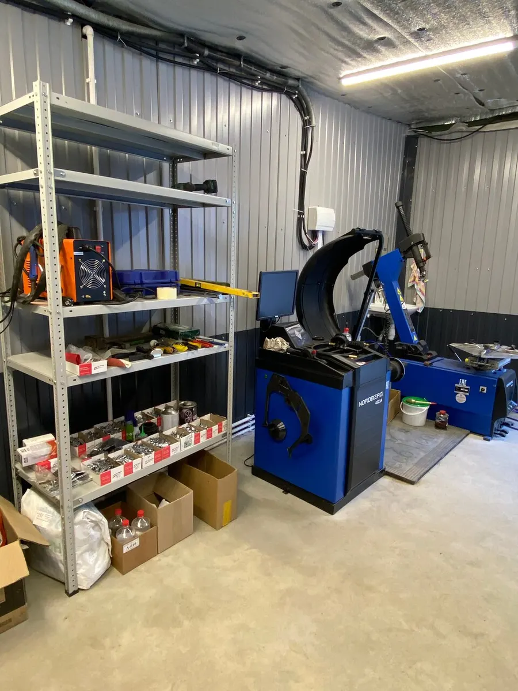
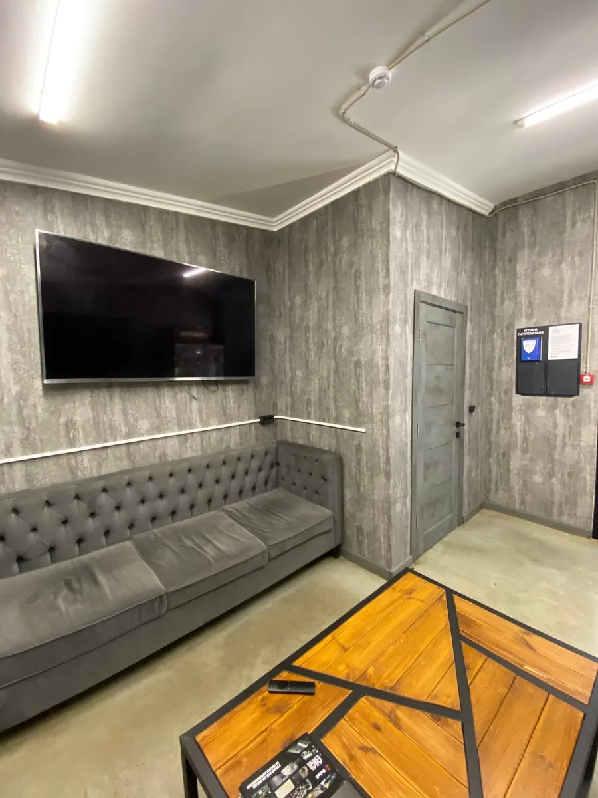

Мойка, детейлинг, шиномонтаж и слесарка · Химки, Спартаковская
Мойка, детейлинг и шиномонтаж в Химках: всё на одном адресе
Цены от и с вилкой по классу автомобиля, запись на удобное время, клиентская зона с Wi-Fi. Ежедневно с 10 до 22.
- 5,0 на Яндекс.Картах, 369 отзывов
- «Хорошее место 2026»
- Ежедневно 10:00-22:00

Цены с карточки на Яндекс.Картах
Цены «от» с вилкой по классу автомобиля или радиусу. Точную сумму для вашей машины назовём по телефону или в WhatsApp.
Мойка
- Классический комплекс3 фазы, пылесос и влажная уборка салона, стёкла, сушка. 1750-2500 ₽ по классу автоот 1 750 ₽
- Комплекс Koch, 3D3 фазы кисточкой, салон, багажник. 3250-3700 ₽от 3 250 ₽
- Детейлинг комплекс WTMудаление вкраплений и битума, салон. 4600-5100 ₽от 4 600 ₽
- Техническая мойка пеной500-650 ₽от 500 ₽
- Мойка двигателяс подкапотным пространством. 3650-4100 ₽от 3 650 ₽
- Мойка мотоциклаот 1 100 ₽
Детейлинг и салон
- Химчистка салонаполная. 17500-19000 ₽от 17 500 ₽
- Комплексная уборка салона1100-1550 ₽от 1 100 ₽
- Полировка кузоватвёрдый воск 6500-8000 ₽, полировка 19000-25000 ₽, керамика 2 слоя 20000-24000 ₽от 6 500 ₽
- Кварцевое покрытие кузова950-1500 ₽от 950 ₽
- Антидождь на лобовое стекло3500-4000 ₽от 3 500 ₽
Шиномонтаж и диски
- Шиномонтаж, комплекс легковой4 колеса, зависит от радиуса и профиля, R13-R22от 2 300 ₽
- Шиномонтаж, комплекс кроссоверкроссовер, внедорожник, минивенот 3 100 ₽
- Ремонт прокола и порезазаплатка от 350 ₽, боковой порез от 1800 ₽, шиномонтаж отдельноот 350 ₽
- Правка диска2350-6150 ₽ по радиусуот 2 350 ₽
- Покраска дисков, комплект11700-45500 ₽ по радиусуот 11 700 ₽
- Сезонное хранение шин3500-5000 ₽ по радиусуот 3 500 ₽
Слесарные работы и кондиционер
- Заправка кондиционераот 4 000 ₽
- Замена масла, ТО, тормоза, ходовая, диагностикауточнить
- Замена ГРМ, ремонт двигателя и КППуточнить
Позиции со словом «уточнить» назовём по телефону или в WhatsApp. Что входит в каждую услугу, расскажем при записи.
Как это проходит
- 01
Записываетесь
Звоните или пишите в WhatsApp: выберем день и время, назовём цену для вашего класса авто.
- 02
Заезжаете во двор
Спартаковская, 3/8с2: ряд боксов с вывесками «МОЙКА» и «ШИНОМОНТАЖ», над входом розовый знак WTM.
- 03
Оставляете или ждёте
В клиентской зоне диваны, Wi-Fi и напитки. Можно оставить машину и вернуться позже.
- 04
Забираете машину
Оплата картой.



Почему к нам приезжают
Всё на одном адресе
Мойка, детейлинг, шиномонтаж, правка и покраска дисков, слесарка и датчики давления.
Цены видны заранее
Цена «от» и вилка по классу автомобиля или радиусу, а не только телефонный ответ.
Запись на удобное время
Клиенты отмечают, что можно записаться на любой день и время.
Клиентская зона
Диваны, телевизор, Wi-Fi и напитки, пока работают с машиной.
Отзывы с Яндекс.Карт
«1. Удобно, что всегда могу записаться на любой день и время, которое мне удобно. 2. Делаю Керамо Мойку, вода просто стекает с машины и не оставляет разводов. 3. Продолжительное время ездила с разбитым стеклом и очень зашерканным, мастер посоветовал поменять лобовое стекло, это небо и земля, теперь ездить одно удовольствие. 4. Так же красила диски у ребят, тоже все супер.»
Jenine · 15 декабря 2025
«Не знаете что такое полный детейлинг автомобиля? Съездите в WTM. Отличная мойка, как повседневная так и предпродажная. Обработка спец. составами, индивидуальный подход к каждому клиенту, вежливое общение и бережное отношение к вашему «железному коню» - здесь всё это есть!»
Тимур Гаффаров · 10 марта 2026
«За последнее долгое время меня не устроило достаточно много моек в Москве и МО, либо цена, либо качество услуг. А тут я сделал шиномонтаж (ремонт диска, погнул) и комплекс мойки с нанесением гидрофоба. Одно из лучших мест, если не лучшее за долгое время. Надеюсь так будет всегда - респект ребятам!»
Александр С. · 27 июля 2026
Отзывы с карточки на Яндекс.Картах, без правок.
Частые вопросы
Где вас найти?
Химки, Спартаковская улица, 3/8с2, Старые Химки. Ряд боксов во дворе с вывесками «МОЙКА» и «ШИНОМОНТАЖ». Ориентир: сквер Юбилейный, около 330 м.
Когда вы работаете?
Ежедневно с 10:00 до 22:00, без выходных.
Как записаться?
Позвоните или напишите в WhatsApp и выберите день и время. В часы пик возможно ожидание, лучше записаться заранее.
Сколько стоит мойка?
Классический комплекс от 1750 ₽, мойка Koch от 2100 ₽, детейлинг-комплекс от 4600 ₽. Цена зависит от класса автомобиля, точную назовём при записи.
Какой шиномонтаж у вас?
Комплекс для легковых от 2300 ₽ и для кроссоверов от 3100 ₽ по радиусу R13-R22, ремонт проколов и боковых порезов, правка и покраска дисков, установка и обучение датчиков давления, сезонное хранение шин.
Чем можно оплатить?
Картой.
Можно с животными?
Да, по карточке на Яндекс.Картах можно со всеми животными.
Запишитесь на удобное время
- Адрес
- Спартаковская улица, 3/8с2, Химки, Химки
- Часы
- Ежедневно 10:00-22:00
- Телефон
- +7 (992) 444-40-55